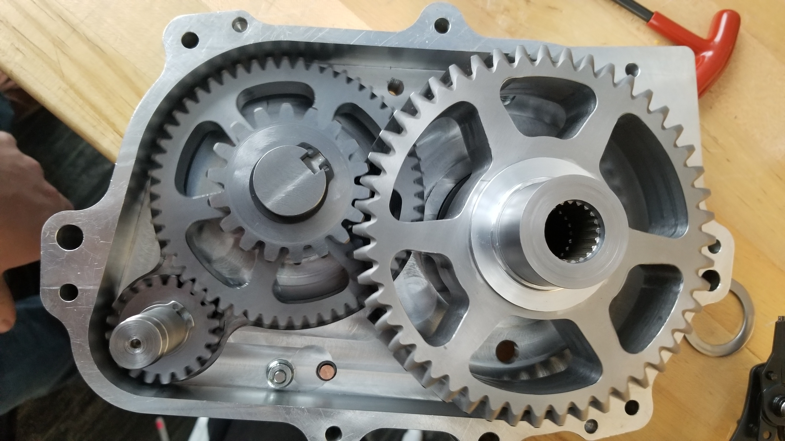

Olin Baja is an entirely student-run project team that annually designs, builds, and races a rugged off-road vehicle at national competitions. The vehicle must perform well in specified dynamic events, be robust enough to stand up to a four hour endurance race, and be easy and fast to repair in the inevitable event of breakdowns during the endurance race. We also must be able to manufacture the vehicle in-house.
I joined the team in 2017 as electrical subteam lead and started a project working toward development of a sensing and logging system for the vehicle. This process included coordinating the subteam members, speccing and testing sensors, batteries, and other hardware, designing a system architecture to connect multiple devices for display and logging, and lots of soldering and writing Arduino. I also put together a powerful driver-to-pit crew communications system, including managing FCC licensing. Toward the end of the season, I moved to more mechanical and fabrication tasks in order to get the car finished on time, including machining half of the gearbox and lots of assembly and troubleshooting.
During the 2018-19 and 2019-20 seasons I served as the fabrication lead. During the design season I worked with the design lead to ensure that all parts were designed for manufacture, helped new members learn CAD and design, and worked to maintain the previous vehicle as a test platform. I also worked with subteams on design at all levels and helped the electrical leads continue development of the system I designed. During build season second semester, I organized fabrication and assembly. As one of three co-captains, I also took on high level team decisions and administrative tasks.
